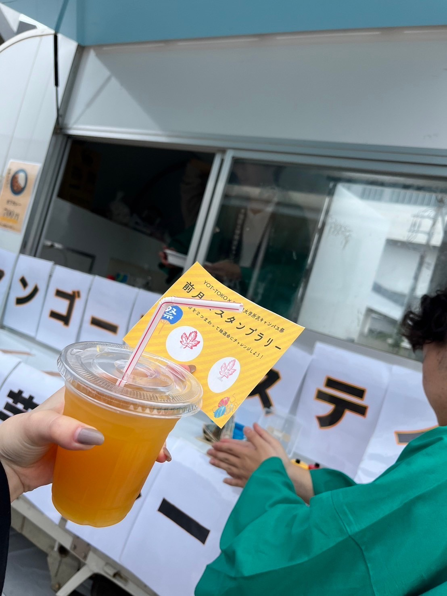
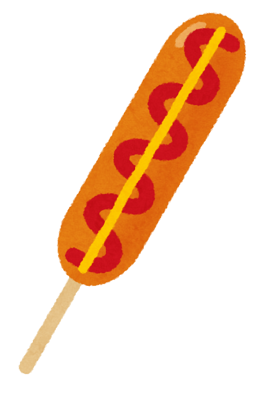
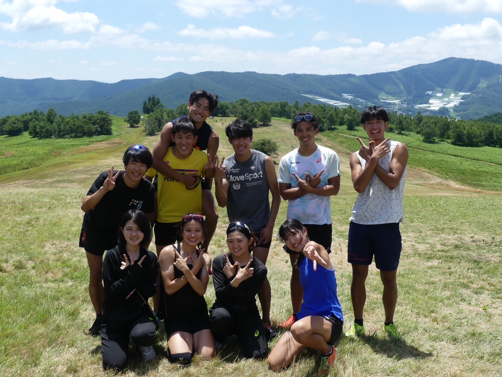

コラボ出店＆体験講座
@ クラッシィ所沢
フード＆ドリンク
クラッシィ所沢では、美味しいフードとドリンクをご用意してお待ちしております。
特製レモンジュース
早稲田大学とタミー食品がコラボした、爽やかな味わいの「特製レモンジュース」を販売。リフレッシュにぴったりです！
フランクフルトなどの軽食
小腹が空いた時に嬉しいフランクフルトなどの軽食も販売いたします。
体験講座
貴重な体験ができる講座も開催します。この機会をお見逃しなく！
早稲田大学競走部による走り方講座
箱根駅伝で第3位となった早稲田大学陸上部による「走り方講座」も開催。現役学生から直接指導が受けられる貴重な機会です。正しい走り方を学んで、運動能力アップを目指しましょう！